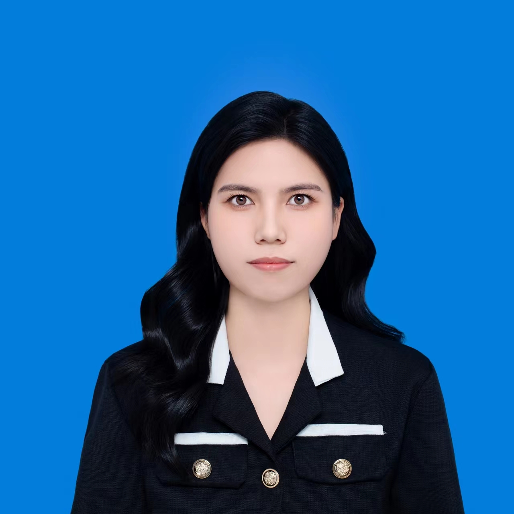

护理专业毕业生
| 姓名: | 黄海璐 |  |
| 身高: | 165cm | |
| 出生年月: | 2002.11 | |
| 政治面貌: | 团员 | |
| 性别: | 女 | |
| 籍贯: | 湖南 | |
| 电话: | 17766724708 | |
| 邮箱: | 2321594059@qq.com | |
| 博客网址: | https://github.com/hhhhhxin/resume/new/main |
2021.09-2024.06 湖南中医药高等专科学校 护理专业 大专
主修课程：外科护理学，内科护理学，儿科护理学，妇产科护理学，急危重症护理学，人体解剖学，病理生理学，健康评估，基础护理学，传染病护理学，大学生英语等
2023.06-2024.03 江门市中心医院 实习护士
工作描述：在临床中能够将理论和实践相结合，积极思考，上手快，有强烈的团队精神和进取心，得到了老师的一致好评；在全科医学科，神经内科，手术室，口腔科，产房，四肢关节骨科，小儿外科，急诊科等科室积累了很多的临床经验，熟悉和掌握了各科常见疾病的护理要点，曾在护理部实习一周，得到了医院领导及老师的肯定。
具有扎实的护理技能和很强的学习能力、适应能力。
开朗热情，吃苦耐劳，有责任心，有担当，积极上进，勤奋好学。
注意细节和实践操作，能够自主分析问题解决问题；具备良好的沟通能力和社交技能。
有较强的团队意识，能够及时与团队成员进行有效沟通；善于倾听和理解他人的需求。
尊敬的领导
您好!
非常感谢您能够呈阅我的求职信。我是湖南中医药高等专科学校护理专业的大专应届生。我有扎实的医学基础知识，熟练的操作技术及出色的工作能力，我有信心胜任即将从事的工作。在此，我向贵单位毛遂自荐。
作为一名医学生,我热爱我的专业,并为其投入了巨大的精力和热情,圆满完成了所有课程的学习,并取得了良好的成绩, 同时我也在努力学习英语等课程，提高英语水平。我深知现代社会更需要“专业突出，素质全面”的人才，因此我积极参加社会活动，把握住每一个可以锻炼自己的机会。在大学几年里，我参加过很多活动, 如校运会、社会实践、校园文化艺术节及书法比赛等，担任计算机委员。在寒暑假及业余时间,多次打过工、做志愿者，参加勤工俭学；同时，在校期间积极参与团课，丰富自己的学习生活，也同时让我我深深体会到团队精神的重要性。
在江门市中心医院实习期间注重理论与实践相结合，较好地掌握了临床常见病多发病的护理，业余时间我也喜欢看些与医学有关的杂志，来扩展自己的知识面。
学习是短暂的，所学的知识也是有限的，作为一名刚刚走出大学校门的我，还没有太多的一线工作经验，还有很多很多的东西要学，大学培养的是一种思维方式和学习方法，不仅让我学到了知识并怎样学习知识，而且也让我学会了怎样做事和做人我渴望在更广阔的天地里进一步提高自己的能力，我热爱贵单位提供的职务，真诚希望能够成为您领导下的一员，为贵单位添砖加瓦，并在实践中不断学习进步，值此附上简历一份，冒昧求职，希望您能给我一次机会。
如能蒙您不弃，有幸成为您的职员，我将不负厚望，踏踏实实做好属于自己的这份工作，为贵单位的腾飞与发展贡献自己的一份力量。
殷切期望您的佳音。
祝贵单位事业兴旺发达、祝您工作顺利!!
此致
敬礼! 自荐人：黄海璐